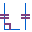

Display relationship handles
Turn the relationship handle display on and off using the Relationship Handles command

.-
In a synchronous part or sheet metal document, choose Home tab→Relate group→Relationship Handles.
-
In an ordered part or sheet metal document, create a sketch and then choose Home tab→Relate group→Relationship Handles.
-
In an assembly document, create an assembly sketch and then choose Home tab→Relate group→Relationship Handles.